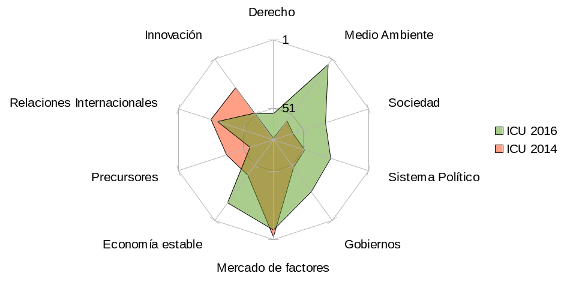
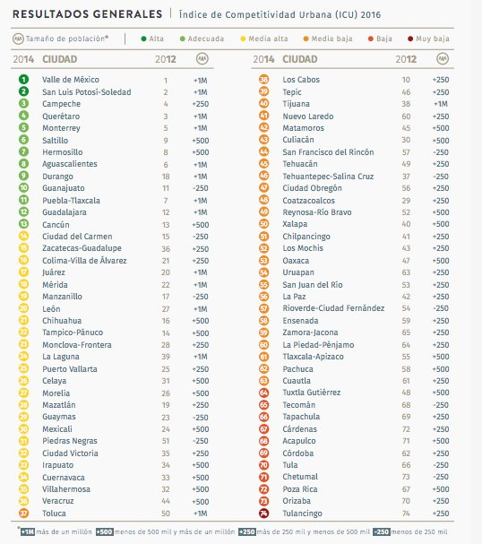
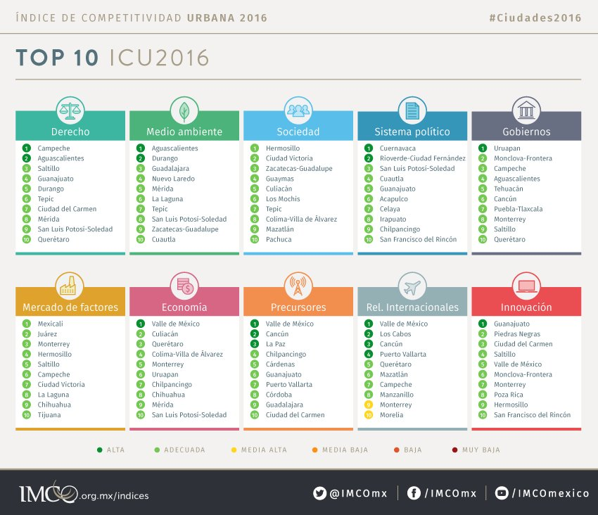

El Índice de Competitividad Urbana (ICU) presentado la semana anterior por el Instituto Mexicano para la Competitividad (IMCO), muestra que La Zona Metropolitana de la laguna recupero 24 puestos en competitividad, estando entre las 6 de 74 ciudades que más mejoraron en 2 años . Los 120 indicadores que componen el Índice nos muestran avances significativos como ciudad a la vez que nos ayudan a detectar los retos para que la Laguna regrese pronto a estar entre as ciudades más competitivas del País.
El Índice de competitividad Urbana (ICU) 2016 compara a 74 zonas metropolitanas que abarcan 367 en México a través de diez subíndices y 120 indicadores. La información comparable corresponde al año 2014. La Zona Metropolitana de La Laguna compuesta por Torreón, Gómez Palacio, Lerdo y Matamoros pasó del lugar 48 en el ICU 2014 al lugar 24 en competitividad de las 74 metrópolis consideradas, pasando así de ser considerada como de competitividad media baja a media alta.
La Zona Metropolitana de la Laguna, pertenece a las 13 ciudades en la categoría de más de un millón de habitantes, dentro de estas ciudades La Laguna ocupa el primer lugar en tres indicadores:
- Ejecución de contratos, medido por el número promedio de días requerido para la ejecución de contratos de negocios, cuya fuente es Doing Business.
- Contribución laboral asociada al trabajo, qué mide la contribución del factor trabajo al crecimiento económico de los municipios, estimada por el propio IMCO con cifras de los Censos Económicos de INEGI, 2008 y 2013.
- Tiempos de traslado, medido como la proporción de personas que hacen viajes menores a 30 minutos para ir a la escuela o el trabajo, indicador proveniente de la Encuesta Intercensal, 2015.
De los 120 indicadores, La Laguna muestra avance en 53, mientras 28 permancen igual y 39 tienen algún grado de retroceso. En este sentido el balance es claramente positivo. Lo indicadores están distribuidos en 10 subíndices. Los datos de cada indicador tienen una valoración que va desde el 1.0 como ponderación más alta al 0.1 como la más baja, es decir no todos los indicadores inciden igual en la competitividad.
En Derecho la ZML tuvo avance en 6 de 8 indicadores. De los indicadores que representaron un avance destacan dos de alto valor: Monto reportado en robo de mercancías y Ejecución de contratos, en donde se escalaron 21 y 1 posiciones. Cabe destacar que hubo una reducción significativa en Tasa de homicidios en poco mayor a 3 veces comparado a 2012.
En Medio Ambiente se miden 15 indicadores de los cuales se escaló en 5, de éstos; 2 son de alto valor. Disponibilidad de acuíferos e Intensidad energética en la economía con avances de 6 y 2 lugares. La ZML se ubica en el 6to lugar en este subíndice contabilizando todos los indicadores. El Consumo de agua mejoró en general en todas las ZM. En La Laguna se avanzó un lugar.
En Sociedad se tuvo avance en más de la mitad de los indicadores, destacando dos de valor alto: Mujeres que estudian con 10 espacios avanzados, Viviendas con piso de tierra con 15. Mortalidad por diabetes y enfermedades hipertensivas mejora 4 lugares, aunque Mortalidad infantil cae 18 y la Tasa de suicidios mejora en 4 espacios.
En Política se avanzó en 2 de 8 y manteniéndose estático en 5 . El que tuvo mejoría es Organizaciones de la sociedad civil con un lugar más alto. Y Participación ciudadana con 7.
En Gobierno se tuvo un avance en 7 de 17 indicadores. Dos de los indicadores con alto peso que mostraron un avance notorio son Índice de información presupuestal (38) y Registro de una propiedad (4).
En Mercado de factores se avanzó en 4 de 11 indicadores, destacando Salario mensual para trabajadores de tiempo completo con 28, Contribución laboral con 30 espacios. De los de alta ponderación, se mejoró en Población ocupada sin ingresos en 12 escalones.
En Economía se aumenta posiciones en 4 de 9 indicadores, destacando Sectores que han presentado alto crecimiento (5). Deuda municipal mostró mejoras avanzando 6 lugares. Este último es de alto valor. El Desempleo se encuentra mejor posicionado con mejora en 9 lugares.
En Precursores se avanza en 4 de 14, siendo Hogares con líneas telefónicas móviles con 9 y Aerolíneas con 6, ambos tienen una ponderación media.
En Relaciones Internacionales se avanzó en un indicador de alto valor dentro del subíndice: Oferta hotelera con 5 lugares.
En Innovación se obtuvieron mejores lugares a comparación de 2012, mostrando avances en el ranking en 4 de 9 indicadores, destacando Empresas con 3 lugares y PIB en sectores de innovación con 2. Este último de alto valor. También hubo avance en Posgrados de calidad con 3 lugares.
Ciudades con más avance relativo a 2016 respecto al ICU publicado en 2014:
| No. | Ciudad | Posición 2016 | Posición 2014 | Diferencia |
|---|---|---|---|---|
| 1 | Celaya | 26 | 60 | +34 |
| 2 | Nuevo Laredo | 41 | 74 | +33 |
| 3 | San Francisco del Rincón | 44 | 72 | +28 |
| 4 | Durango | 9 | 36 | +27 |
| 5 | Juárez | 17 | 43 | +26 |
| 6 | La Laguna | 24 | 48 | +24 |
| 7 | Irapuato | 33 | 57 | +24 |
| 8 | Tehuacán | 45 | 68 | +23 |
| 9 | León | 20 | 40 | +20 |
| 10 | Rioverde-Ciudad Fernández | 57 | 75 | +18 |
La Zona Metropolitana de La Laguna por Subíndice de Competitividad
| Índice de Competitividad Urbana | 2016 | 2014 | Variación |
|---|---|---|---|
| GENERAL | 24 | 48 | 24 |
| Derecho | 55 | 73 | 18 |
| Medio Ambiente | 6 | 57 | 51 |
| Sociedad | 34 | 59 | 25 |
| Sistema Político | 30 | 50 | 20 |
| Gobiernos | 27 | 49 | 22 |
| Mercado de factores | 8 | 3 | -5 |
| Economía estable | 17 | 42 | 25 |
| Precursores | 56 | 38 | -18 |
| Relaciones Internacionales | 31 | 26 | -5 |
| Innovación | 50 | 27 | -23 |
Competitividad 2016 ZML

ICU 2016 Resultados Generales

ICU 2016 Top 10
